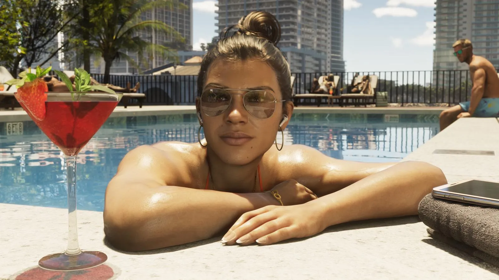

Возрастной рейтинг GTA 6: 18+ — что в игре и почему
Опубликовано:

- ESRB (США, Канада): M — Mature 17+.
- PEGI (Европа, Великобритания): 18.
- Австралия — R18+, Новая Зеландия — R18 с пометкой «сексуальные сцены».
- ESRB указала 7 причин: от крови и насилия до наркотиков и откровенных сцен.
- Все номерные GTA с 2001 года получали максимальный рейтинг.
Рейтинги по странам
| Система | Страны | Рейтинг GTA 6 |
|---|---|---|
| ESRB | США, Канада | M — Mature 17+ |
| PEGI | Европа, Великобритания | 18 |
| Классификационный совет | Австралия | R18+ |
| Классификационное бюро | Новая Зеландия | R18 (с пометкой «сексуальные сцены») |
Рейтинги появились в карточках игры осенью 2026 года. В начале октября на сайте PEGI ненадолго появилось подробное описание содержания игры, но в тот же день страница исчезла; сам рейтинг PEGI 18 остаётся на европейских страницах PlayStation Store. В России у GTA 6 официального релиза нет, поэтому российской возрастной маркировки у неё тоже нет.
Почему 18+: семь причин ESRB
| Пункт ESRB | Что это значит |
|---|---|
| Blood and Gore | Кровь и сцены с расчленением |
| Intense Violence | Интенсивное, реалистичное насилие |
| Mature Humor | Взрослый, грубый юмор |
| Nudity | Обнажённость |
| Strong Language | Нецензурная брань |
| Strong Sexual Content | Откровенные сексуальные сцены |
| Use of Drugs and Alcohol | Употребление наркотиков и алкоголя |
Это ровно те же семь пунктов, что у GTA 5 на современных консолях. Разница в деталях: австралийская и новозеландская маркировка прямо пишут о «сексуальных сценах», а журналисты, успевшие прочитать удалённое описание PEGI, пересказывали упоминания расчленения и употребления наркотиков персонажами. Так что GTA 6 не стала «мягче» — Rockstar сохранила характер серии.
Внутриигровые покупки
В карточках ESRB и PEGI указано In-Game Purchases — «внутриигровые покупки». Что конкретно продаётся в самой игре, Rockstar не уточняла. Сейчас под это точно подходят переход со Standard на Ultimate Edition и подписка GTA+. Будут ли в сюжетной игре платные валюта или предметы — станет ясно после релиза.
Рейтинги всех GTA
| Игра | Год | ESRB |
|---|---|---|
| Grand Theft Auto III | 2001 | M |
| Vice City | 2002 | M |
| San Andreas | 2004 | M → AO → снова M (скандал Hot Coffee, 2005) |
| GTA IV | 2008 | M |
| GTA V | 2013 | M |
| GTA VI | 2026 | M |
Самая известная история — с San Andreas: в 2005 году моддеры нашли в коде вырезанную мини-игру Hot Coffee с откровенным содержанием, и ESRB поменяла рейтинг на AO («только для взрослых»). Магазины сняли игру с полок, Take-Two выпустила исправленную версию и снова получила M. С тех пор Rockstar очень аккуратно работает с рейтингами: всё, что есть в игре, описано в карточке заранее.
Что важно знать родителям
- GTA 6 — игра для взрослых: насилие, криминал, наркотики, откровенные сцены и мат — часть сюжета и мира, а не редкие эпизоды.
- В PS5 и Xbox есть родительский контроль: можно запретить игры с рейтингом выше выбранного возраста.
- В Великобритании рейтинги PEGI закреплены законом: продавать игру с PEGI 18 несовершеннолетним запрещено.
- Если ребёнок хочет «про машины и город», в игре всё равно будет криминальный сюжет — лучше посмотреть трейлеры вместе и решить самим.
Частые вопросы
С какого возраста GTA 6?
ESRB — 17+, PEGI — 18+.
Почему у GTA 6 рейтинг 18+?
Насилие, кровь, обнажённость, откровенные сцены, мат, наркотики и алкоголь.
Есть ли в GTA 6 микротранзакции?
В рейтингах указаны внутриигровые покупки; подробности Rockstar не раскрывала.
Источники: ESRB — карточка Grand Theft Auto VI (esrb.org); PEGI — рейтинг на европейских страницах PlayStation Store; Australian Classification Board и NZ Classification Office — листинги магазинов Xbox/PlayStation; GTA Intel, IBTimes UK, Gurugamer — сообщения об удалённом описании PEGI (октябрь 2026); ESRB — история рейтинга GTA: San Andreas (2005).
Каждый день — одно сравнение: кадр игры рядом с реальным фото. Подписывайтесь:
YouTubeInstagramTikTok